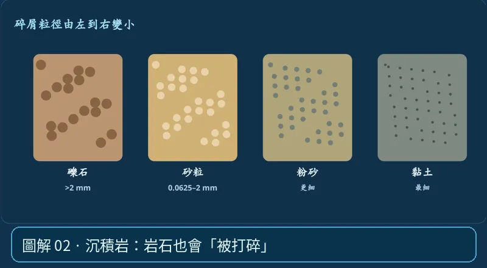

第 03 單元｜圖解 2/6｜課本 p.71–75
沉積岩：岩石也會「被打碎」
岩石經風化 → 侵蝕 → 搬運 → 沉積 → 壓密、膠結，形成碎屑沉積岩。礫岩、砂岩、頁岩可由顆粒大小理解；化學或生物作用也能形成石灰岩。
① 看一眼② 操作圖③ 自己推理④ 揭開解答
🔬 這張圖，請自己動手試
操作圖上方的頁籤、滑桿或按鈕；圖片也能左右滑動放大觀看。
互動圖解 · 沉積岩：岩石也會「被打碎」

原創 SVG 地科教學模型，方便理解，非真實比例、非即時地震資料；互動無法載入時仍有靜態圖。
STEP 01 · 先觀察
👀 眼睛先找線索
在「沉積粒徑」中沿著礫→砂→粉砂→黏土看顆粒變小，聯想溪流搬運與海底沉積。
💡 為什麼是這樣？
碎屑岩由舊岩石經風化侵蝕、搬運沉積，再壓密與膠結形成；生物及化學作用也能產生沉積岩，別把所有沉積岩都當砂堆。
🎯 換個問法想一題
有化石、有層理的岩石，通常應先想到哪類？
我想好了，點開看答案 ↓
優先考慮沉積岩，因為化石保存與沉積層理都常見於沉積過程。
⚡ 一句記住：沉下來變岩石